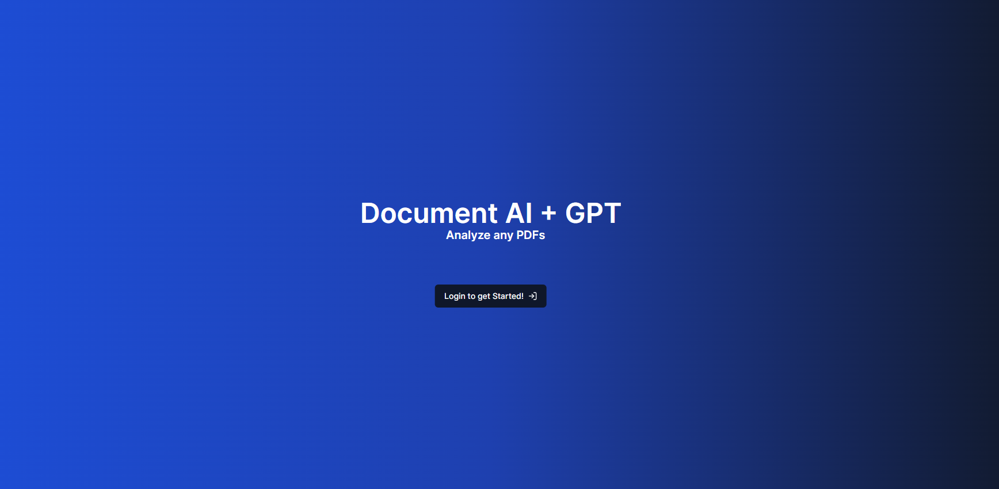
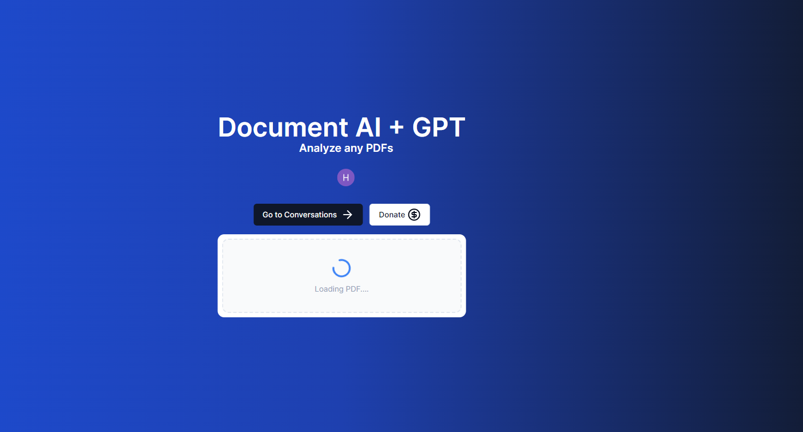
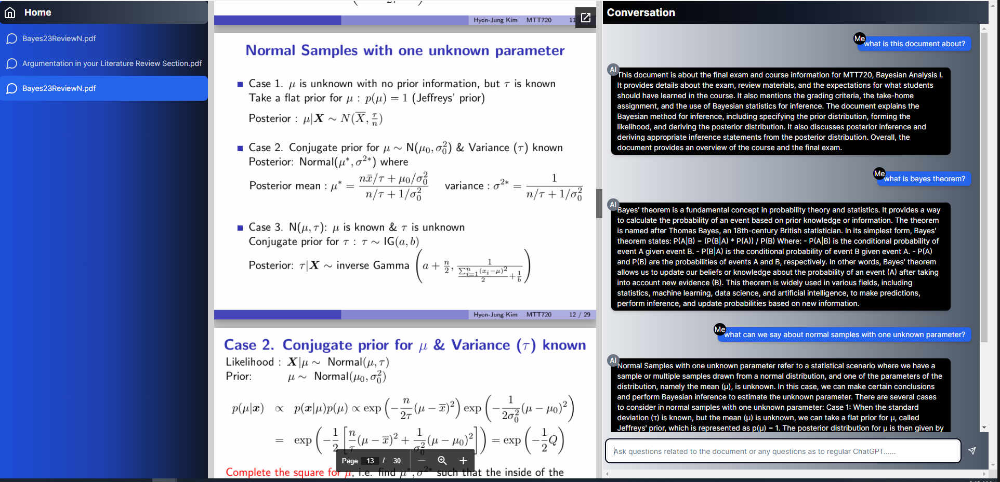

Document AI + Chat GPT

Home Page

File Upload

Document Chat
×

AI-Powered SaaS Platform with Recurring Revenue: We are launching a SaaS service focused on providing a cutting-edge AI-powered solution
Web Technology Stack
Next.js, TypeScript, Tailwind CSS, Clerk Auth, Drizzle ORM + NeonDB, Stripe, AWS S3
AI Technology Stack
PineconeDB, Langchain, OpenAI, Vercel AI SDK
Key Features
- PDF Interaction: Users can upload PDF documents and interact with them using OpenAI.
- Seamless Deployment: PDFs are uploaded to Amazon S3 and hosted on Vercel for rapid accessibility.
- Real-time Updates: A chat interface is created with the document, providing real-time updates.
- Contextual Queries: Users can ask questions with full PDF context, receiving streaming responses from OpenAI.
- Token Management: The platform manages token count to avoid overflow when processing entire documents.
- Chat Log Storage: All chat logs are securely saved in the database.
- Use Case Example: The platform enables users to access the latest information, such as technology documentation updates, by converting web content into PDFs for interactive querying.
Technology Stack Highlights
- Neon DB: A serverless PostgreSQL database along with utilizing DrizzleORM.
- Integration: Stripe API for subscription management, AWS S3 for PDF storage.
- Pinecone DB: Stores vector embeddings of all documents for efficient retrieval.
- Langchain: Connects OpenAI and PyconDB, focusing on supported APIs.
- Edge Compatibility: Neon DB works seamlessly with Edge Runtime for optimal performance.
- RAG Framework: Implemented to ensure factual accuracy and reliability of AI-generated content.
AI Implementation Steps
- Obtain the PDF.
- Split and segment the PDF using Langchain.
- Vectorize and embed individual documents.
- Store vectors in PineconeDB.
- Embed the query.
- Query PineconeDB for similar vectors.
- Extract metadata from similar documents.
- Feed metadata into the OpenAI prompt.
App Development Steps
- Initialize a new Next.js web application.
- Set up ShadCN for building custom components.
- Implement Clerk Auth for seamless authentication.
- Develop homepage components.
- Configure DrizzleORM for database interactions.
- Create a file upload component for PDFs.
- Set up Amazon S3 for PDF storage.
- Implement AI components: React Query setup - Pinecone DB integration - Build AI Chat Components (Chat Sidebar, PDF Preview, Chat Component) - Querying Pinecone + Open AI for context retrieval - Saving Chat logs into Neon DB
- Integrate Stripe for subscription management.
- Deploy the application to Vercel.